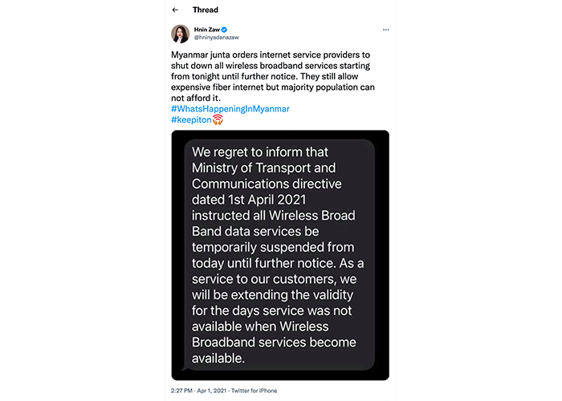

Since the military staged a coup in Myanmar on February 1, 2021, more than 2,400 people were killed and over 16,000 have been arrested through the brutal crackdown on the pro-democracy movement by the military junta, according to
Assistance Association For Political Prisoners.
Number of people who were killed in Myanmar FEB 2021-NOV 2022
Click on the circle to see the number of people who were killed in each state and region
Senior General Min Aung Haling and his army overthrew a democratically elected civilian government led by Aung San Suu Kyi last year. The junta claims there is widespread fraud and threaten to take action. But the election commission said there was no evidence to support these claims.
Protesters, including activists and dissidents who have been killed and arrested, were from Sagaing, Mandalay, Yangon, and Magway regions.
These are regions where surveillance cameras equipped with facial recognition and license plate recognition
technology were installed prior to the coup as the initiative of the safe city project, according to Reuters.
Myanmar military launched an assault on pro-democracy protesters in early April | Vice News
“As part of its [the military junta] desperate effort to effectively suppress dissent and control the population,
it appears that the military is determined to turn the country into a heavily surveilled state with access to data
combined with more invasive surveillance technologies imported from China and Israel. A series of arrests have been
made by the military using these technologies, such as CCTV cameras, recently,” said Moses Gum, a human rights defender on the Thai-Myanmar border.
The military is now installing more surveillance camera systems in 10 states and divisions across the country. Myanmar Now
reports that prior to the coup, more than 300 surveillance cameras were in place in eight townships in the capital, Naypyidaw, and a total of 2,995 CCTV were installed in 1,138 places in Yangon, according to the Yangon regional government.
Surveillance Cameras Installation in states and regions
Click on the circle to see where CCTV cameras were installed
The Chinese-built surveillance camera with artificial intelligence technology from Huawei company will enable the junta’s ability to
“identify people on the streets, potentially track their movements and relationship, and intrude into private lives poses a grave risk
to anti-coup activists,” said Manny Maung, Asia researcher of Human Right Watch.
Currently, the military possesses a digital forensic tool from the Swedish company MSAB according to the Intercept. MSAB is a phone-hacking device equivalent to the Israeli company-owned Cellebrite.
This software could break mobile phone encryption and extract calls, contact, GPS, and messages sent and received via SMS, WhatsApp, Signal, and other apps. MSAB can also extract passwords and login
tokens from mobile devices, enabling authorities to remotely enter someone’s online service, including Google, Facebook, and cloud storage explained The Intercept.
A video explained how the MSAB Function
Travelers in Myanmar were asked to show their smartphones at the police checkpoint. Maria Ja Seng, who is returning to her home from Myawaddy, was asked to unlock and hand over her smartphone to a security guard at the checkpoint. She doesn’t know why they are checking her phone or what information they are looking at. The checking process took around 10 minutes.
A leaked budget document from Myanmar’s Ministry of Home Affairs and Ministry of Transport and Communication, provided by activist group Justice for Myanmar indicates that the military and police sought to purchase a collection of forensic and surveillance technology from companies from America, China, Russia, and European countries. This product could extract data from smartphones, access phone conversations, and monitor people’s movements.
Surveillance systems are used in many countries, especially the global north, in order to prevent crimes and aim for a safe city. The United Kingdom is one of the countries that deployed the highest number of CCTV to keep a close eye on their citizens. However, Myanmar is an authoritarian state and there is no data protection for its citizens. Instead, these data collections are used to target activists and human rights defenders.
Moses Seng
“In the context of Burma, when you look at what has been going on since the military staged a coup in 2021, it is more concerning because there is no rule of law, there is no procedure, and no regulation to handle this collected data. Many people know that these technologies are used by the military to suppress dissidents, to blackmail people, and to arrest people on groundless charges.”
The digital repression
The digital repression also began right after the military coup. The military-run state Administration Council ordered the two telecom companies, the Norwegian firm Telenor and Qatar-based Ooredoo, to hand over all their customer data to the junta, with the aim of bringing telecommunications under its control.
The new internet law required telecom service providers Ooredoo and Telenor to reveal user personal information, such as their address, phone number, national identification number, and activity histories, to military authorities.
This has led Telenor to withdraw from Myanmar, stating the junta’s new regulations breached European law, and sell its operations to the Lebanese M1 Group, which later sold its shares to the military-linked firm Shwe Byain Phyu,
according to The Diplomat.
On July 8, 2021, Telenor announced the sale of its entire operation in the country to M1 Group, a Lebanese-based investment firm, for $105 million. In March 2022, the Myanmar Investment Commission gave final approval to the sale of its operation in a press release. This will allow the junta to access a call data record of 18 million Myanmar subscribers consisting of the time, date of the call,
the phone numbers of the parties, the call duration, and the place of the call according to Myanmar Now.
This has raised concerns among politicians, activists, and dissents in fear that the junta will get its hands on data and use it to make the arrest. Forty-five organizations worldwide experts in responsible telecom operations have written to the chair of the board of Telenor Group, Gunn Wærsted, urging her to stop their rash sale to the controversial company M1 Group.
“I felt insecure because telecommunication companies are now under military control. This is not only a concern about privacy infringement but also a threat to the democracy movement,” an activist, who refers to disclosing her name due to security concerns.
“I am sure that the junta is using this digital surveillance and tracking data software to target democracy activists and human rights defenders because they know that if they secure all telecommunication companies, they will be able to control all communications and people movements. This will lead to more arbitrary arrests of activists and human rights defenders who protest the junta's illegitimate actions,” she added.
There are four main telecommunication companies in Myanmar – Myanmar Posts and Telecommunication (MPT), a state-own enterprise under the supervision of the Ministry of Transport and communication. Telenor, a Norwegian firm, Ooredoo, Qatar-based, and Myanmar National Tele & Communication Co. Limited, a joint venture between Viettel Group (Vietnam) and Star High Telecom Limited, Myanmar National Telecom Holding Company.
The junta carried out internet restrictions and frequent internet shutdowns as a tool to limit free expression and conceal human rights abuses in the country. A press release released by United Nations on June 7, 2022, stated that 54 of Myanmar's 330 townships are affected by the internet shutdown and internet speed throttling. A report published by the Freedom House
shows that digital rights in Myanmar hit an all-time low in 2022.

A tweet about the internet shutdown in Myanmar during the coup
There is a coincidence that when human rights violations are committed by the military junta, the internet will be shut down in that area. On October 24, 2022, when the military junta airstrike on a concert commemorating the 62nd anniversary of the founding of the Kachin Independence Organization (KIO) in Hpakant, Myanmar, that have killed 80 people and injured hundreds, the public was left isolated, unable to contact friends and family to seek help and urgent medical attention.
A video depicting the aftermath of an airstrike on the concert on October 24, 2022
“There have always been concerns about digital security because these telecommunications companies were under military control. The military can order these companies to shut the internet or telecommunication lines down in areas where they conduct so-called military operations,” said Mr. Seng.
Despite the torture, arbitrary arrests, killings, and internet restrictions, the public continues their revolution on online platforms by documenting human rights violations committed by the military’s security forces. Activists and protesters have utilized social media such as Facebook, Twitter, and Instagram as tools for collaboration and report of human rights violations.
Article 19
Given the increasingly
brutal crackdown
against pushback,
critique, and political
speech, together
with the intention of
ubiquity and tracking
implicit in Myanmar’s
current CCTV
procurement,
ARTICLE 19 believes
that the authorities
are failing in their
duty to uphold this
right for the people
of Myanmar. The
country's current
approach towards
CCTV installation
perpetuates the idea of
mass surveillance.
Waihnin Pwint Thon
I can tell you for sure he [her father] deleted his email and we understand that he didn’t give his password to anyone. I think they [the military] are showing people that they can trace back to your past and they can find anything, even from a private secure mobile phone or laptop. So, that’s the way of telling everyone that they have advanced technology.
During the interview with Aljazeera, she described how her father was arrested because of delected documents obtained from his phone.
The Washington Post
In 2018, the authorities used a cellphone-breaching technology from an Israeli company, Cellebrite to detain two Reuters journalists who were investigating the killing of Rohingya Muslims in Rakhine state.
Visual Credits
Open photo: A view of Pagan in Myanmar | Open link
Final photo: Anti-coup protest in Yangon | BBC
Twitter screenshot: Twitter Photo: Waihinin Pwint Thon | Facebook Photo: Reuters Journalists | BBC Videos: Obtained from Citizen Journalist | MSAB's Youtube Channel | The Gurdian